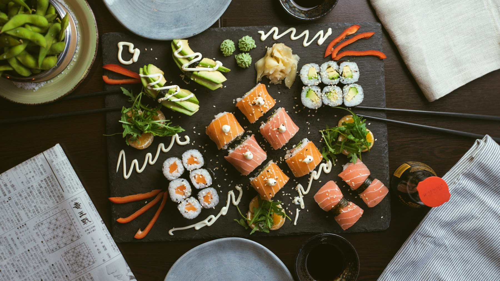
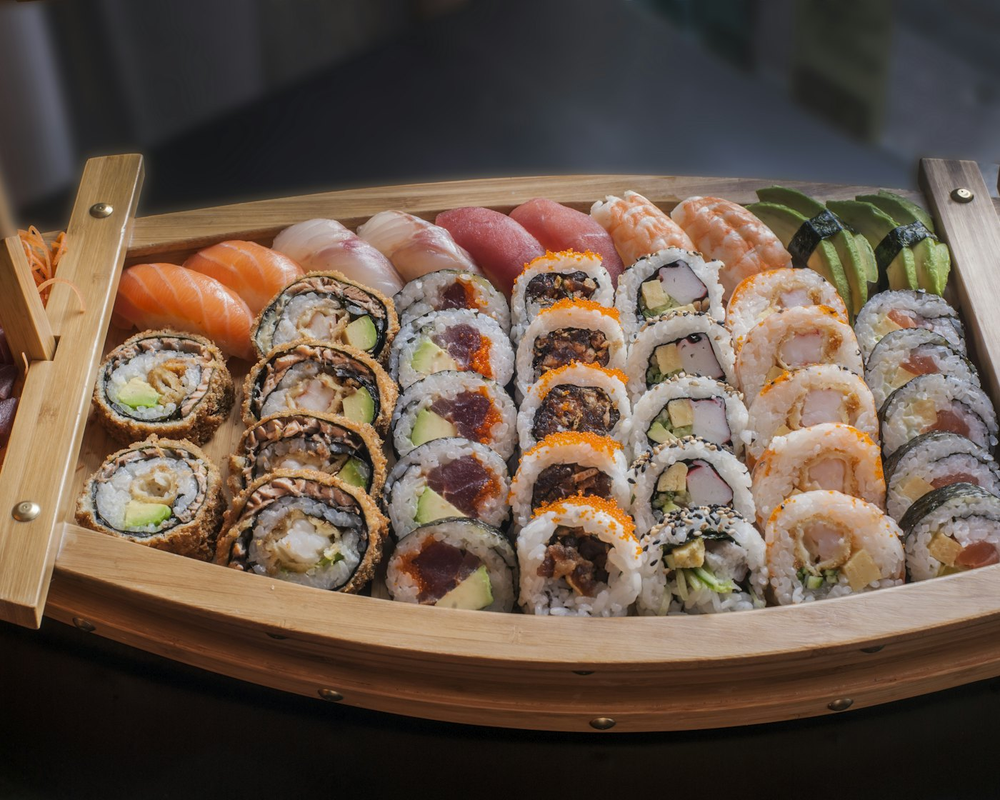

Menu A
1 persoon€ 13,95
- Mini loempia's (4 st.)
- Saté ajam (1 stokje)
- Babi Pangang of Foe Yong Hai
All-you-can-eat in Nunspeet: kies uit ruim 100 gerechtjes en geniet 2,5 uur lang van dagverse sushi, de bakplaat en de wok. Het dessertbuffet is inbegrepen.
All-you-can-eat vanaf € 36,50 p.p.

Restaurant Jing is hét Aziatische restaurant van Nunspeet waar u heerlijk kunt genieten van het lekkerste dat Azië te bieden heeft.
Niet alleen Japans, Chinees of Indisch, maar tal van facetten van de Aziatische keuken. Van dagverse sushi tot gewokte gerechten, van de welbekende Babi Pangang tot overheerlijke Chinese beef met kon po saus. Alle gerechten zijn zo geproportioneerd dat u de hele avond kunt genieten.
All-you-can-eat, 2,5 uur, exclusief drank, inclusief dessertbuffet.
| Leeftijd | di t/m do | vr t/m zo | Verlengen per half uur |
|---|---|---|---|
| 12 jaar en ouder | € 36,50 | € 38,50 | € 5,00 p.p. |
| 6 t/m 11 jaar | € 21,50 | € 22,50 | € 3,00 p.p. |
| 4 t/m 5 jaar | € 11,00 | € 12,00 | gratis |
| 0 t/m 3 jaar | € 2,00 | € 2,00 | gratis |
Voor te veel bestelde gerechten rekenen wij € 2,00 per gerecht. Op feestdagen kunnen we andere prijzen hanteren.
Ook thuis genieten van onze gerechten? Naast onze restaurantkaart bevat ons afhaalmenu alles wat u nodig heeft om thuis of op het werk de smaken van Azië te ontdekken. Van eenpersoonsmaaltijden tot complete rijsttafels.
Alle gerechten in plaats van witte rijst met nasi of bami: € 1,50 extra (groot € 2,50). Met mihoen of Chinese gele bami: € 3,00 extra (groot € 5,00).
Met rijst
Met rijst
Gebakken visfilet met rijst
Met rijst
Met rijst
Met rijst
Met rijst
Met rijst, saus apart
Voor 2 personen, inclusief nasi, bami of witte rijst
Geen gerecht gevonden. Probeer een ander nummer of woord.
Thuis genieten van onze sushi: bestel een van onze sushiboxen om af te halen.

Sashimi zalm & tonijn box€ 15,50
3x zalm, 3x tonijn
Sushi sashimi box€ 24,50
2x nigiri zalm, 2x nigiri tonijn, 3x sashimi zalm, 3x sashimi tonijn, 4x California roll
Zalm tonijn box€ 18,00
3x nigiri zalm, 3x nigiri tonijn, 3x maki zalm, 3x maki tonijn
For one box€ 20,50
3x komkommer maki, 3x krabstick maki, 6x nigiri mix (zalm, tonijn, garnaal, krabstick, omelet en tofu)
Maki box€ 23,50
6x zalm maki, 6x tonijn maki, 6x krabstick maki, 6x komkommer maki
For you box€ 39,50
6x zalm maki, 6x tonijn maki, 6x krabstick maki, 6x California roll, 12x nigiri mix (zalm, tonijn, garnaal, krabstick, omelet en tofu)
Family sushi box€ 62,50
8x ebi tempura roll, 16x California roll, 24x maki mix (zalm, tonijn, krabstick en komkommer), 24x nigiri mix (zalm, tonijn, garnaal, krabstick, omelet en tofu)
Family sushi sashimi box€ 74,50
8x ebi tempura roll, 8x sashimi zalm, 8x sashimi tonijn, 16x California roll, 24x maki mix (zalm, tonijn, krabstick en komkommer), 24x nigiri mix (zalm, tonijn, garnaal, krabstick, omelet en tofu)
Speciaal voor iedereen die thuis of op het werk wil genieten met vrienden, familie en collega's: vier cateringmenu's, al vanaf € 13,95 p.p. Zo kunt u nog eens een feestje geven!
€ 13,95 per persoon
€ 15,95 per persoon
€ 17,95 per persoon
€ 19,45 per persoon
Meer info via telefoon of mail. Sushi en catering (pdf)
Geniet tijdens de kerst bij Jing of thuis. Reserveren? Bel 0341 786 260 of mail naar info@restaurantjing.nl.
25 en 26 december, exclusief drinken
| 1e ronde15.30–17.30 of 15.00–17.00 uur (2 uur) | € 44,50 p.p. |
|---|---|
| 2e ronde17.30–20.00, 18.00–20.30 of 18.30–21.00 uur (2,5 uur) | € 49,50 p.p. |
| Kind 4 t/m 11 jaar | € 3,50 per levensjaar |
| Kind 0 t/m 3 jaar | € 3,50 p.p. |
Met onder meer beef salade, verse Peking eend, verse oesters, Noorse kreeft en sushi dragon roll.
24, 25 en 26 december, inclusief nasi, bami of witte rijst
Weekend: volwassenen (12+) € 38,50 p.p., kind 4 t/m 11 jaar € 2,25 per levensjaar, kind 0 t/m 3 jaar gratis.
Di t/m do: volwassenen (12+) € 36,50 p.p., kind 4 t/m 11 jaar € 2,25 per levensjaar, kind 0 t/m 3 jaar gratis.
Kom je verjaardag vieren bij Jing en eet als jarige gratis! Ja, je leest het goed: Jing trakteert de jarige op een gratis diner.
Voorwaarden: de jarige dient zich te identificeren. Alleen geldig op de dag van de verjaardag zelf en bij minimaal 10 volwassenen in het gezelschap. Jing behoudt zich het recht voor de voorwaarden aan te passen.
| Maandag | gesloten* |
|---|---|
| Dinsdag | 16.00–21.00 uur |
| Woensdag | 16.00–21.00 uur |
| Donderdag | 16.00–21.00 uur |
| Vrijdag | 12.00–22.00 uur |
| Zaterdag | 12.00–22.00 uur |
| Zondag | 12.00–21.00 uur |
* Maandag zijn wij gesloten, met uitzondering van feestdagen.
T 0341 786 260M 06 187 029 82info@restaurantjing.nl
Bestellen of reserveren? Bel ons, of mail voor een reservering.